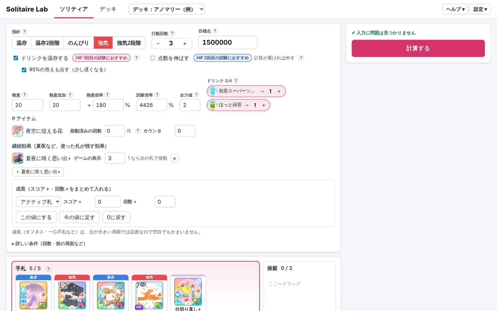
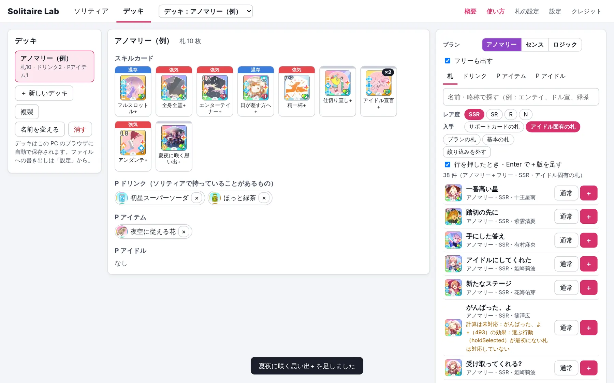
デッキの札を押すとメニューが開きます。
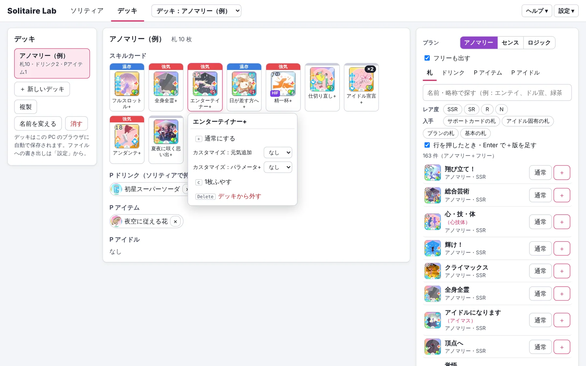
| 指針 | 今の指針のボタンを押します | 行動回数 | ＋ − で合わせます |
|---|---|---|---|
| 目標点 | 取りたい点数 | 熱意・熱意追加 | ゲームの数値のまま |
| 熱意倍率 | ゲームの表示のまま（例：＋180） | 試験倍率 | 例：4426 |
| ドリンク | 持っている本数を ＋ − で入れます（4本まで） | ||
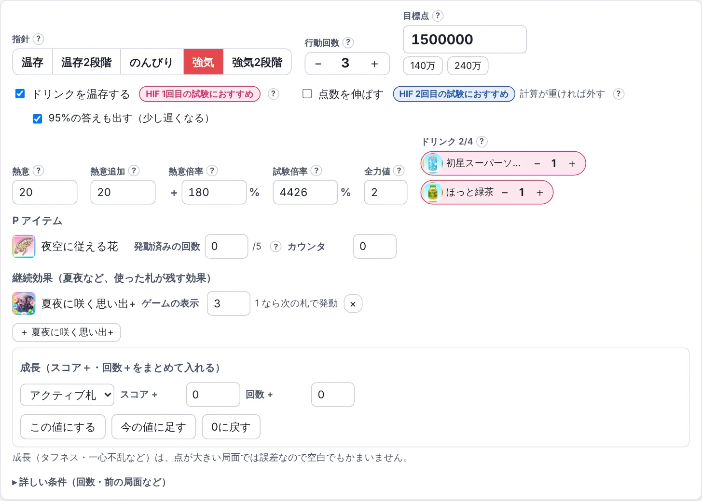
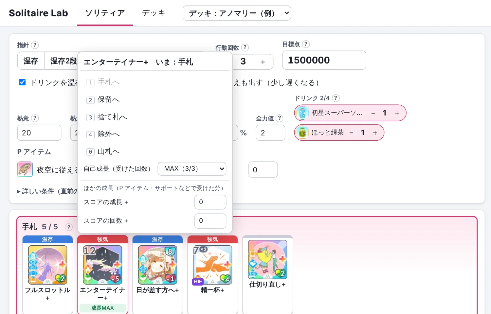
入力の欄の横の「?」にマウスを乗せると、何を入れるかが表示されます。
全力値を使う札がデッキにあるときは「全力値」（ブースト・ラッシュなどがあるときは「累計の全力値」も）の欄が出ます。ゲームの画面の値を入れてください。全力値がコストの札（アンダンテなど）は、全力値が足りるときだけ使えます。
デッキの P アイテムのうち、入力が必要なもの（発動済みの回数・カウンタ）は、熱意などの下に欄が出ます。ゲームの画面と見比べて入れてください（熱意倍率の欄には、発動した分も含めたゲームの表示の値を入れます）。
局面の入力の下の「▸ 詳しい条件」を押すと、次の項目が表示されます。必要なときだけ入力してください。
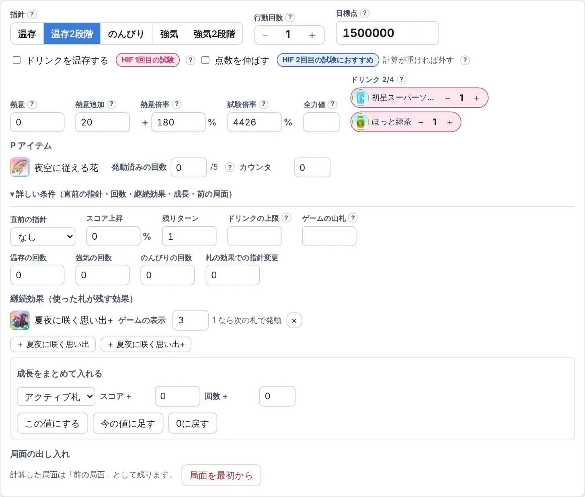
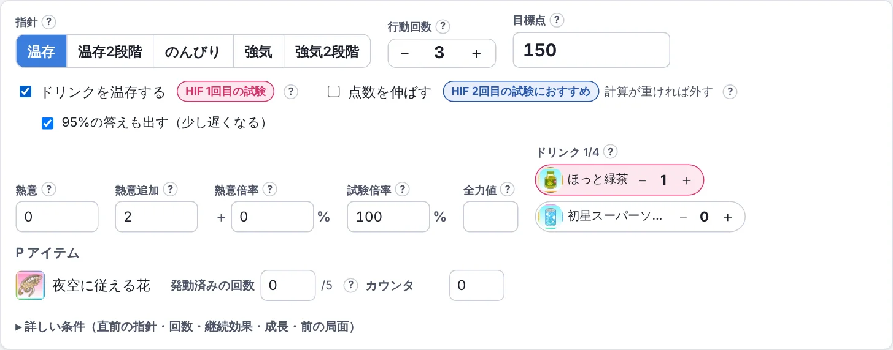
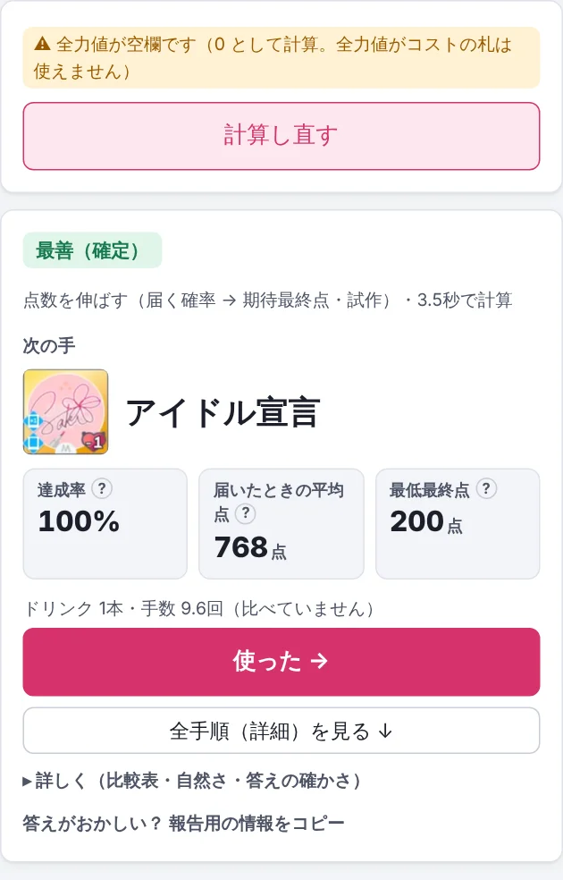
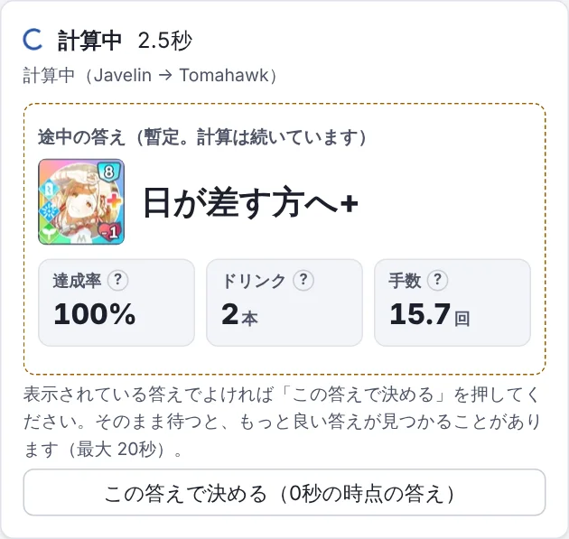
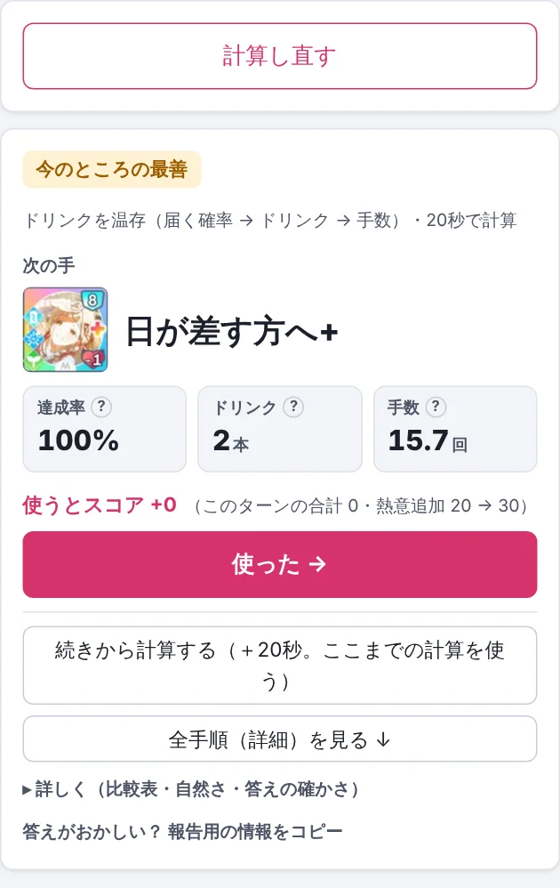
「▸ 詳しく」を押すと、次の内容が表示されます。
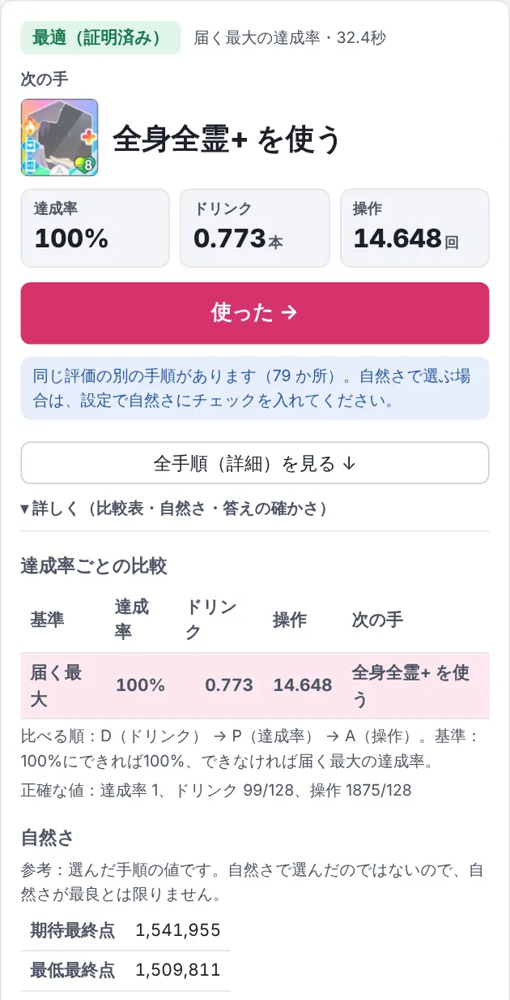
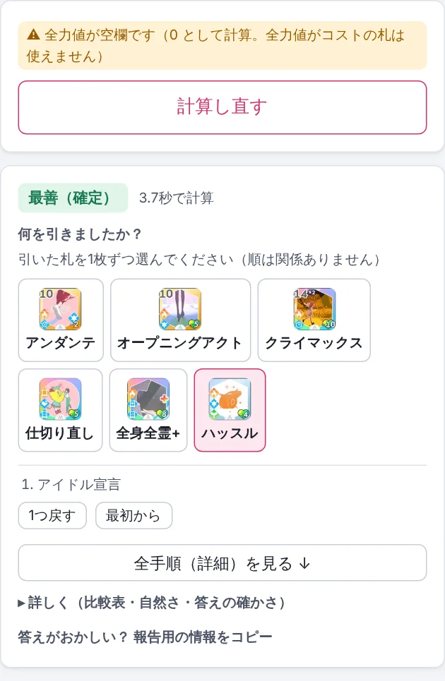
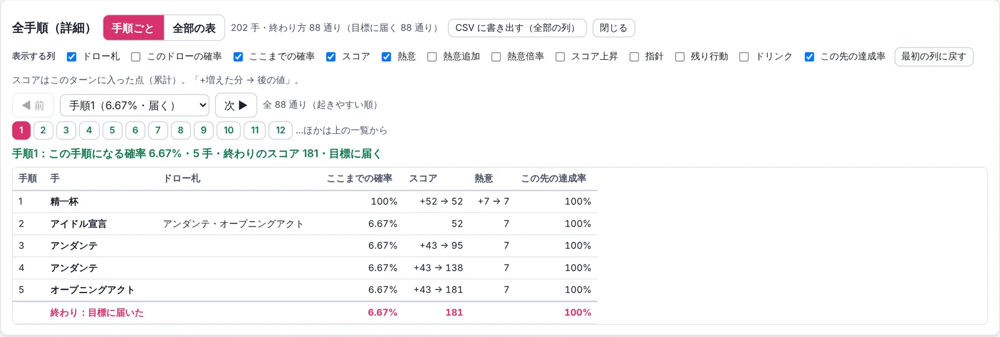
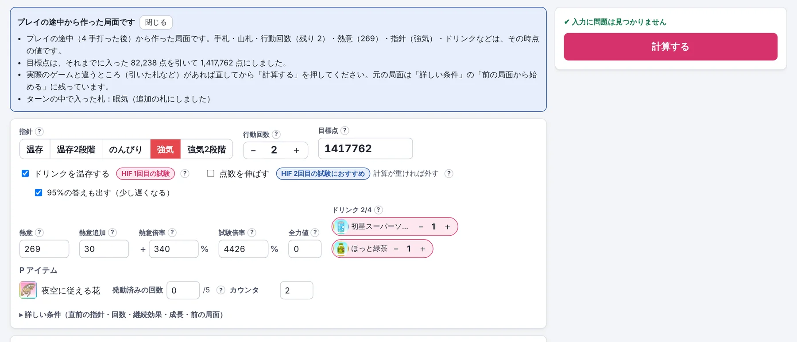
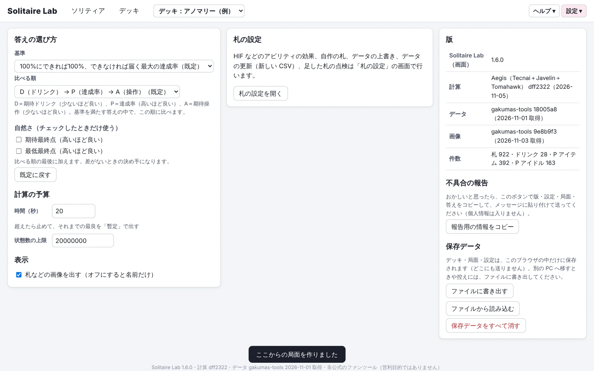
右上の「設定 ▾」→「札の設定」で、次のことができます。
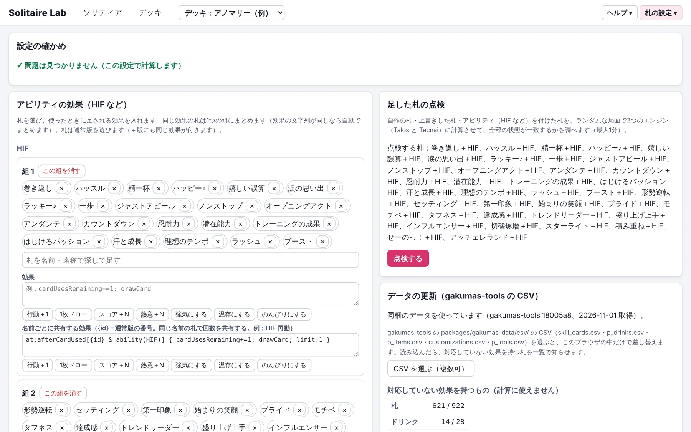
| 結果がおかしい | 結果の下、または「設定」にある「報告用の情報をコピー」（右上の「ヘルプ」の中にもあります）を押し、ひとこと添えて作者に送ってください。入力した内容と結果がコピーされます（個人情報は含まれません）。 |
|---|---|
| 計算が遅い | 「ここから局面を作る」で途中から計算する、「詳しい条件」で使ってよいドリンクの本数（ドリンクの上限）を入れる、計算の時間を延ばす、のいずれかをお試しください。 |
| 別の PC・ブラウザで使いたい | 右上の「設定 ▾」→「設定」の「ファイルに書き出す」で保存し、別の PC・ブラウザの「ファイルから読み込む」で読み込みます（保存はブラウザごとに別です）。 |
| 報告の局面を見たい | 「ヘルプ ▾」→「報告から局面を戻す」に、報告用の情報（【Solitaire Lab 報告用】から最後まで）を貼ると、その局面を新しいデッキと局面として作ります。 |
| 開けない・表示がおかしい | ページを読み込み直してください。それでもだめなときは、使っているブラウザの名前と、表示された内容を作者に送ってください。 |
| 今の版を知りたい | 画面の一番下に、版の番号が表示されています。 |